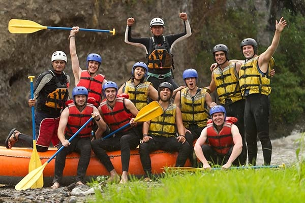

At Shine Rafting Company, our purpose is to ignite a sense of adventure, connection, and joy through unforgettable whitewater rafting experiences. We are committed to providing safe, exhilarating, and eco-conscious adventures that bring people closer to nature and to each other. By fostering a deep respect for the rivers we navigate and the communities we serve, we aim to inspire a lifelong passion for the outdoors while preserving its beauty for generations to come. Adventure shines brighter with us!